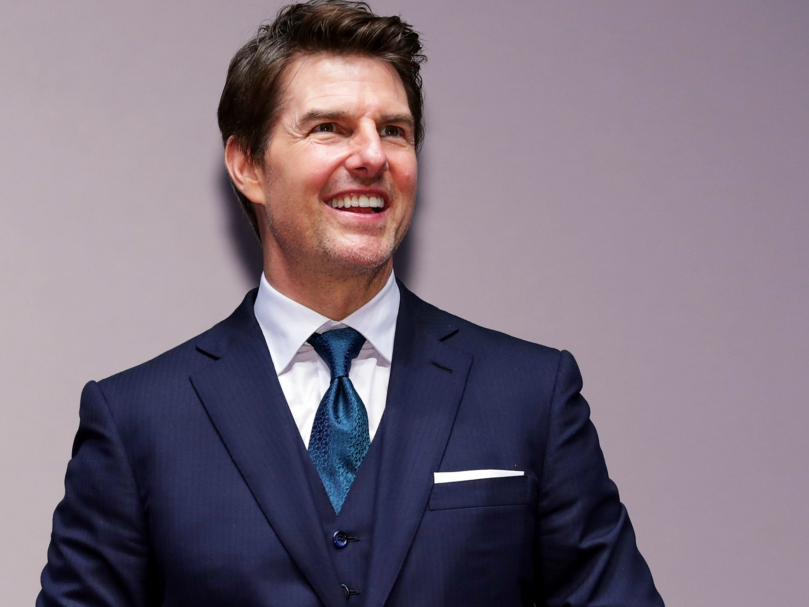

Tom Cruise
Thomas Cruise Mapother IV (born July 3, 1962), better known by the stage name Tom Cruise, is an American actor and producer. He has received various accolades for his work, including three Golden Globe Awards and three nominations for Academy Awards. With a net worth of $570 million as of 2020, he is one of the highest-paid actors in the world.[3] His films have grossed over $4 billion in North America and over $10.1 billion worldwide,[4] making him one of the highest-grossing box office stars of all time.
Cruise began acting in the early 1980s and made his breakthrough with leading roles in the comedy film Risky Business (1983) and action drama film Top Gun (1986). Critical acclaim came with his roles in the drama films The Color of Money (1986), Rain Man (1988), and Born on the Fourth of July (1989). For his portrayal of Ron Kovic in the latter, he won a Golden Globe Award and received a nomination for the Academy Award for Best Actor. As a leading Hollywood star in the 1990s, he starred in several commercially successful films, including the drama A Few Good Men (1992), the thriller The Firm (1993), the horror film Interview with the Vampire (1994), and the romance Jerry Maguire (1996). For his role in the latter, he won a Golden Globe Award for Best Actor and received his second Academy Award nomination.
Cruise's performance as a motivational speaker in the drama film Magnolia (1999) earned him another Golden Globe Award and a nomination for the Academy Award for Best Supporting Actor. As an action star, he has played Ethan Hunt in all six of the Mission: Impossible films from 1996 to 2018. He also starred in science fiction and action films, including Vanilla Sky (2001), Minority Report (2002), The Last Samurai (2003), Collateral (2004), War of the Worlds (2005), Knight and Day (2010), Jack Reacher (2012), Oblivion (2013), Edge of Tomorrow (2014) and The Mummy (2017).
Cruise has been married to actresses Mimi Rogers, Nicole Kidman and Katie Holmes. He has three children, two of whom were adopted during his marriage to Kidman and the other of whom is a biological daughter he had with Holmes. Cruise is an outspoken advocate for the Church of Scientology and its associated social programs, which he credits with helping him overcome dyslexia. In the 2000s, he sparked controversy with his Church-affiliated criticisms of psychiatry and anti-depressant drugs, his efforts to promote Scientology as a religion in Europe, and a leaked video interview of him promoting Scientology.